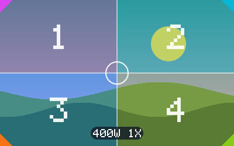
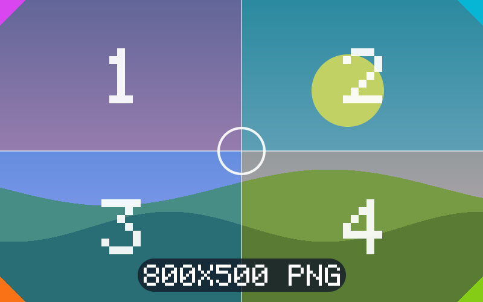
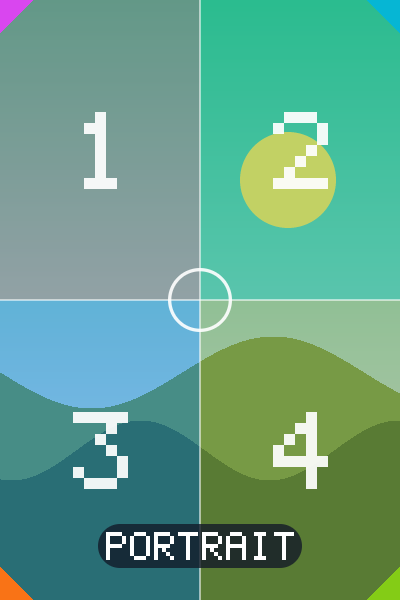
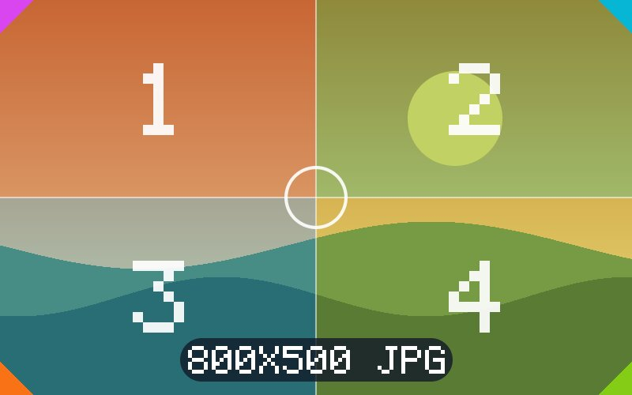
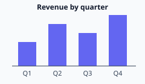

Images — same origin
All images load from this origin, data: or blob: URLs.
Responsive candidates

srcset 400w / 1600w, sizes=400px
srcset 1x / 2x at 240×150

<picture> webp source, png fallback
object-fit (portrait 400×600 into 200×200)

cover → FILL
contain → FIT
fill → STRETCH
none → FIT + warning
scale-down → FIT
cover + object-position right bottom
Shapes, data: and blob:
border-radius 24px
circle avatar
![data URI png]() data:image/png
data:image/png
 data:image/svg+xml
data:image/svg+xml
 blob: URL (script)
blob: URL (script)
Formats

JPEG
animated GIF
PNG with alpha
WebP with alpha
 ICO
ICO

<img src=*.svg>
same bytes again
 404 image
404 image
Canvas & video
<canvas> drawn by script
video, preload=none → poster
video seeked to 1.5 s → frame 2
Spacer: the lazy image below is ~3000px under the fold.
loading="lazy" — needs auto-scroll